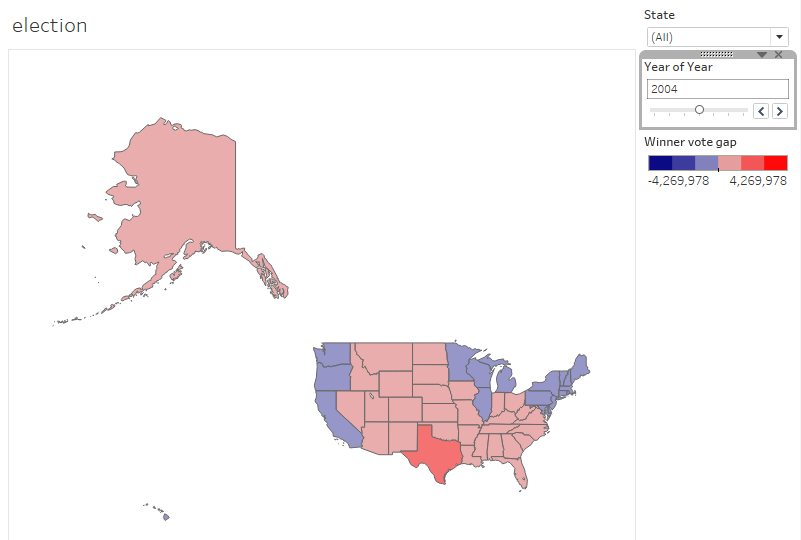
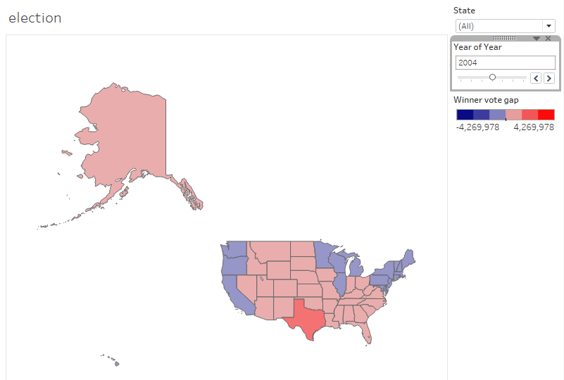

PROJECT 1 SUBMISSION: VOTING FACTORS (Dashboard, Process Book, and Voice Over)
Bailey Zyer, Brock Von Holt, Dan Hird, Grace Fetters
OUR DASHBOARD:
COMMENTS AND INSIGHTS FROM OUR DASHBOARD:
One example of an insight that we were able to obtain from our Tableau visualizations were key factors that we saw very clearly influence the election cycles. For example, the above screenshots show the change in popular vote in each election cycle from 2000-2016 in Florida. Comparing the vote and the data in the state at that time can lead us to conclusions about why the state voted the way it did. Plus, being able to exercise this feature is especially useful in the all important swing states like Florida.
Looking at the difference in the vote between 2000 and 2004 shows that a greater number of people voted Republican in 2004 than in 2000. When looking at the data provided, we can see that average income per capita increased during that period, as well as seeing that the crime rate dropped during that time as well. This lends weight to the idea that voting Democrat means people want change (if things are not going well for people economically or other reasons), and voting Republican, especially in this case, means the population wants to keep things the way they are because they believe things are going well. This data that is presented combined with the knowledge that minorities in Florida (who usually vote Democrat nationwide) are much more likely and to vote Republican and have traditionally done so in Florida, this can help tell the story of why George W. Bush was re-elected in 2004.
When looking at the difference between 2004 and 2008, however, traditions flew out the window. The first black presidential nominee was running at that time on the Democratic ticket, and identified with minorities much more than the Republican candidate. In addition to this historic nomination, the country was reeling from being in the midst of the recession that began in late 2007/early 2008. A combination of these factors was the perfect storm to swing Florida in a very Democratic direction.
Having the data to reference definitely helps to see why a state or even an entire nation voted the way it did. What helps even more is when one can take the data and utilize it in the context of what was happening at that certain time to see the real story behind the numbers. We think that our analysis thus far is in line with our goal for the whole visualization and has the ability to answer the audience’s and our main questions about presidential elections in the U.S.
PROCESS BOOK:
OVERVIEW AND MOTIVATION:
Voting Factors is a project that focuses on how different variables have affected voter turnout and behavior at the state level over time. The project uses data from the presidential elections that have occurred since 2000. Our goal with this visualization is to create meaningful reports that help the user audience come to conclusions about how voting has or has not changed since 2000 in regard to the factors we focused on. We want this visualization to be a tool that can be used to better understand past election so that future elections may be a little more predictable.
Our motivation and interest in this topic stems from the most recent presidential election in 2016. This out of the ordinary election put American politics and the general election cycle in a worldwide spotlight. We want to understand election drivers and see what factors more significantly affect how states vote. It is also important to note that America has one of the lowest voter turnout numbers of developed countries around the world. Only about 60% of eligible American voters decide to exercise their right during presidential election cycles.
RELATED WORK:
We were inspired by other works that examine countrywide issues as well. While they may not be directly related to the voting factors we have chosen, we were inspired by some of their features and aimed to model some of the good design in our own visualization. You can view inspiration for an option bar to compare different variables here. This shows a cool approach to show how a state has changed over time. Another inspiration was this map that shows a breakdown of voter information for states and counties. These sources inspired us to think about more details we wanted to try and include like being able to select certain regions of the country or ability to select certain election years at one time.
QUESTIONS:
As stated before the main purpose of this visualization is to delve into how voting factor have affected presidential elections over time. In order to do this, we had to come up with factors that we felt were the most important and telling of the voting population. These factors include demographics like age and gender to unemployment rates.
With these factors we, as well as any audience, will be able to answer questions like why states vote the way they do, the drivers of a state’s shift in voting from one election to another, and how different factors influenced the outcome of the most recent election. This could help drive decisions for future candidates when choosing what different groups of people they should focus on and where to allocate money when campaigning. Maybe even help candidates decide which states they want to spend the most time in. We want to observe voting in our lifetime and be able to answer any questions we have about it with the chosen data sets
DATA:
The factors that we chose to get data for are:
-Demographics (Race/Ethnicity)
-Population of each state
-Gender
-Age
-Unemployment Rates
-Education Level (High School degree/Higher Education Degree)
-Crime Rate
These factors were chosen because we think they are directly related with how a certain state votes. For example, state with high unemployment rates may be looking for a candidate that will increase jobs and condemn companies who have advanced their technology while a state with high crime rates may be looking for a candidate who believes in common sense gun laws.
We were able to gather this data from reputable sources like census.gov and the Bureau of Labor Statistics. We chose to gather data that was relevant to the years of presidential elections since 2000. That is, years 2000, 2004, 2008, 2012, and 2016 for each state. We chose these years because we want to focus on voting in our lifetimes.
In terms of cleaning data, since we obtained all of our data from government websites we were able to select the pertinent years and variables needed. In order to for the data to be consistent and useful in Tableau, we reformatted the data in Excel to include only the necessary data points. In essence, those Excel spreadsheets for each year and factor are what is visualized in Tableau.
EXPLORATORY DATA ANALYSIS:
As seen in our sketches and subsequently our final project dashboard, we were interested in coming up with an interactive map of the United States that shows how people in every state voted, and then drill down into seeing how different groups of people voted in the nation and in every state as well. This visualization helps us see how the data connects. For example, having the popular vote data coincide with socioeconomic and other demographic data would be the best tool to tell a story based on each election year. This story can help the audience come to multiple conclusions and use the visualization as a tool.
DESIGN EVOLUTION:
Above we listed some other information graphics that inspired some of our designs. We came up with a general idea for the major visualizations that we wanted to be able to create. These include; US maps with states outlines, options bars to compare variables, draggable timeline, and a color scheme of mainly red and blue representing the two party democratic system. We knew we wanted to make a dashboard that comprehensively shows the data we gathered.
Here are some rough sketches we came up with at first:
Once the initial Tableau dashboard had been completed, some ideas changed to make the design more fluid and intuitive to use. Here is a screenshot of that:
There were some features we decided to add. These included; shading on the map to represent if a state voted more republican or more democratic in each election cycle, the hover ability over each state to reveal data about the state for that year, and side by side comparisons of each state from ‘00-’16 each election cycle.
EVALUATION:
The whole point of this visualization is to see how voting factors have changed over the last few presidential elections and make conclusions about voting in America. Our resulting visualization does answer these questions and reveals that population data for a state or for the nation as a whole can be used in conjunction with the current events of the time period to show what drove voter turnout and to see why people voted the way they did.
By using the change by each state portion of the visualization, a conclusion this dashboard reveals is that states that had increasing unemployment rates in the past up until 2016, in which they declined, tended to switch from being historically democratic to republican. For example, In Pennsylvania the unemployment rate was 4.2% in 2000, rose all the way to 7.8% in 2012, then dropped to 5.7% in 2016. Wisconsin follows the same trend and Michigan also follows a very similar trend in terms of unemployment leading up to the 2016 election. These three states were considered key states in Donald Trump’s victory in the 2016 election. As referenced above, this data demonstrates idea that voting Democrat means people want change (if things are not going well for people economically or other reasons), and voting Republican, especially in this case, means the population wants to keep things the way they are because they believe things are going well. Additionally, Trump’s campaign often focused on the creation of jobs in America. When seeing states who had dealt with increasing unemployment, and are finally seeing unemployment decrease, it would make sense that it’d be important to them for unemployment to continue to decline which aligned with Trump’s campaign. This visualization could lend a hand in showing some of the factors that led to what many saw as a shocking election in 2016.
VOICE OVER:
https://www.youtube.com/watch?v=jNoxtZ8DJD8